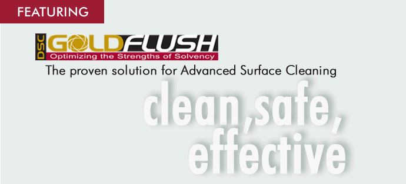

Deep
South Chemical, Inc. was formed in 1988 to meet the increasing specialty
wellbore cleaning needs of our customers. We set the standards for
World Class Customer Service. DSC employees all agree that our first
priority
is customer satisfaction. DSC Customer Service Representatives always
respond to our customers on a timely basis with accurate information.
We work hard everyday to improve our customer service to the level
of satisfaction our customers deserve and have come to expect. Personalized
attention is what we provide. Understanding your questions and solving
any problems as quickly as possible is of great importance to us. Our
customer service department is available 24 hours a day, 7 days a week,
365 days a year. |
||||
 |
||||
|
To speak with a sales representative, call 1-800-737-3546 | |||